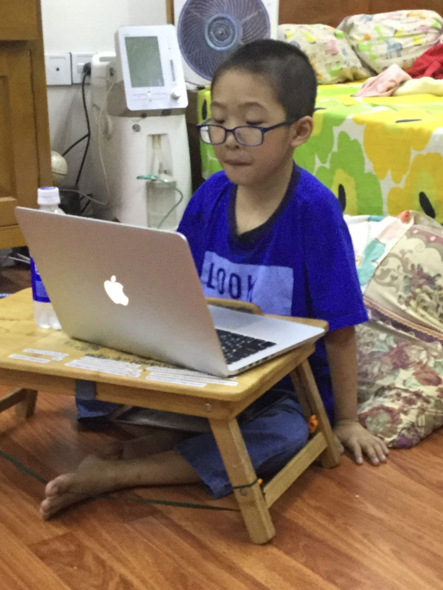
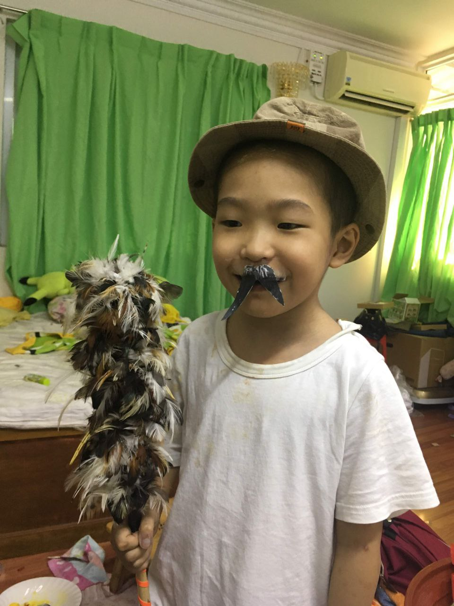

အာနာပါန ရှုမှတ် စာရင်း Ānāpāna Breathing Counter
တစ်ချက်ထိ၍ တစ်ကြိမ်မှတ်ယူပါ။ နှစ်ချက်ထိ သို့မဟုတ် Esc ဖြင့် ရပ်နိုင်ပါသည်။
One-finger tap — count · Two-finger tap / Esc — stop
{{ isEnglish ? 'Time' : 'အချိန်' }}
{{ formattedTime }}
{{ isEnglish ? 'Elapsed' : 'ကြာမြင့်ချိန်' }}
{{ isEnglish ? 'Breaths' : 'ရှုမှတ်' }}
{{ displayBreaths }}
{{ isEnglish ? 'count' : 'ကြိမ်' }}
{{ isEnglish ? 'Rounds' : 'ပတ် (ဝါရ)' }}
{{ rounds }}
{{ displayBreathsPerRoundSub }}
{{ isEnglish ? 'Per round' : 'တစ်ဝါရလျှင်' }}
{{ isEnglish ? 'breaths' : 'ကြိမ် = ၁ ဝါရ' }}
{{ isEnglish ? 'Mode' : 'မှတ်နည်း' }}
{{ isEnglish ? 'Round target' : 'ရည်မှန်းပတ် (ဝါရ)' }}
{{ isEnglish ? 'rounds' : 'ပတ် (ဝါရ)' }}
{{ isEnglish ? '(0 = off)' : '(0 = မသတ်မှတ်ထား)' }}
{{ isEnglish ? 'Target Duration' : 'ရည်မှန်းကြာမြင့်ချိန်' }}
{{ isEnglish ? 'Inhale' : 'ရှုသွင်း' }}
s
+
{{ isEnglish ? 'Exhale' : 'ရှုထုတ်' }}
s
= {{ targetDuration }}s/breath
ရှုမှတ်ခြင်း စတင်ရန် ဖိနှိပ်ပါTap to begin
Tap to BeginFull-screen tap mode
{{ isEnglish ? 'Idle' : 'ငြိမ်သက်စွာ စောင့်နေသည်' }}
About this app
Ānāpāna Breathing Counter
A quiet companion for breathing practice, offered in loving remembrance.
Features
• One-tap session start
• Per-breath counting or round-based counting
• Supports 8 / 10 / 12 breaths as 1 ဝါရ
• Bilingual result display in Myanmar and English
• Samadhi score, consistency, deviation, and duration analysis
• Session history storage and replay
• Wake Lock support to keep the screen on during practice
About the App
`anapana-vue` is a simple yet polished Ānāpāna breathing counter built with Vue 3. It is designed to present breathing time, breath counts, round counts (ဝါရ), and result/history analysis on a single, calm screen.
Gallery
.jpg)
Page 1

Page 2
Page 3

Page 4
Dedication
ဤအက်ပ်ကို သားသားလေး၏ ကောင်းကျိုး၊ စိတ်ငြိမ်သက်မှု၊ ပညာထွန်းကားမှုနှင့် မေတ္တာတရား တိုးပွားမှုအတွက် ရိုသေစွာ ရည်စူးပါသည်။
ရှုမှတ်သည့်အခါတိုင်း သတိတရားခိုင်မာစေပြီး၊ ရင်အေးသက်သာစေကာ၊ ဘဝလမ်းခရီးတွင် ကောင်းမွန်သည့် အားအင်နှင့် ငြိမ်းချမ်းမှုကို ပေးစွမ်းနိုင်သော နူးညံ့သည့် တရားအလှူတစ်ခုအဖြစ် ရှိနေစေလိုပါသည်။
This app is respectfully offered as a merit dedication for a beloved little son, with love and mindful remembrance.
May every gentle breath counted here nurture calm attention, steady practice, and wholesome strength, becoming a quiet support for a peaceful and fortunate life.
This is a quiet companion for mindful practice, reflection, and loving remembrance.
For a beloved little son — always remembered, always loved.